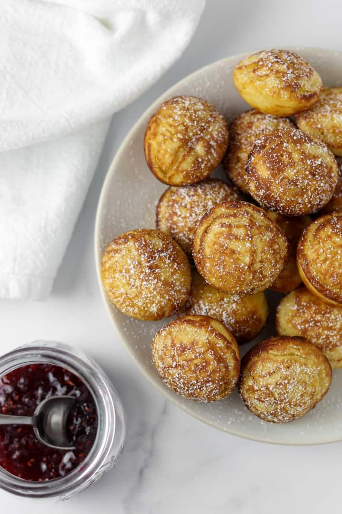

Æbleskiver
Æbleskiver are traditional Danish pancakes in a distinctive shape of a sphere. Somewhat similar in texture to American pancakes crossed with a popover, Æbleskiver are solid like a pancake but light and fluffy like a popover. The English language spelling is usually aebleskiver or ebleskiver.

Ingredients:
- All purpose flour
- Baking powder
- Salt
- Ground cardamom and nutmeg
- Vanilla extract
- Milk
- Large eggs
- Granulated sugar
- Unsalted butter
Instructions:
- Step 1: Whisk dry ingredients together in a medium bowl. Set aside. Whisk milk, egg yolks, vanilla and melted butter together in a large bowl until well combined. Add dry ingredients to wet ingredients and stir until just combined. Whip egg whites until medium peaks form and scrape into the bowl.
- Step 2: Gently fold the whipped egg whites into the batter with a rubber spatula until just incorporated.
- Step 3: Heat an aebleskiver pan over medium low heat. Dot each round with a small cube of butter or brush with melted butter.
- Step 4: Spoon a heaping tablespoon of batter into each round so that it is almost full. Cook until the bottom is just set, about a minute.
- Step 5: Using a wooden skewer, gently turn each æbleskiver 90 degrees so that the batter spills out into the pan.
- Step 6: Keep turning so that the side that is partially done is on the top. With the help of the skewer, continue cooking and turning until the æbleskiver are golden brown on all sides and a skewer inserted into the center comes out clean, about 6 to 8 minutes total. Set on a wire rack to cool and repeat with remaining batter.